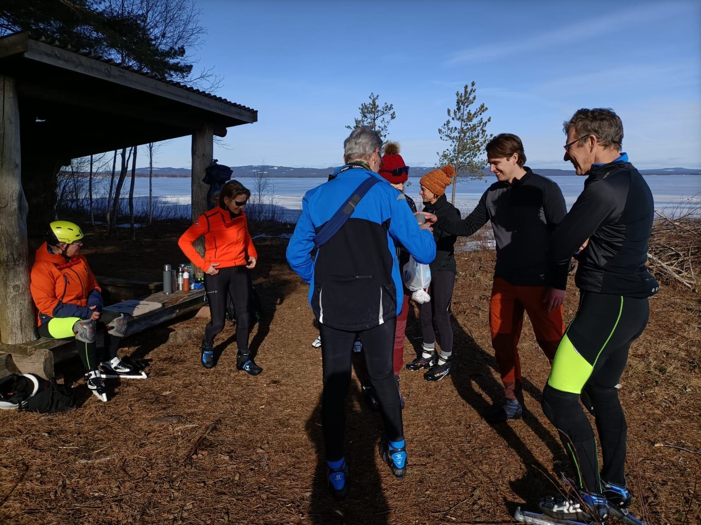
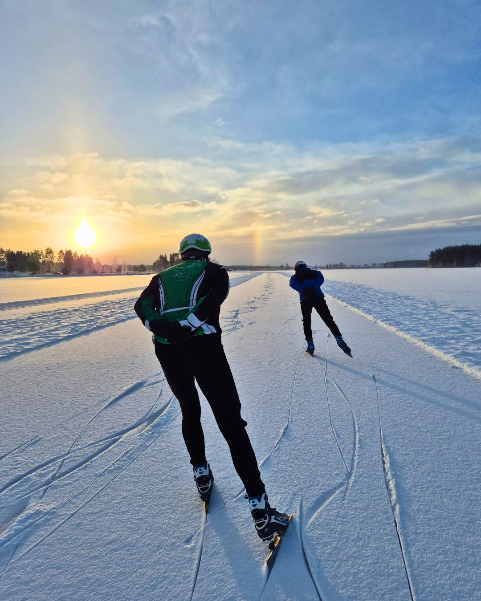

Inclusief fly & drive


Orsa & Falun, Zweden
Groepsreizen
Bij een groepsreis reis je op een vaste datum, met begeleiding. Je meldt je aan per 2 personen.
Inbegrepen: vlucht, accommodatie, auto, gids en begeleiding en 3 dagen schaatsen.
- Soort reis
- Groepsreis, begeleid
- Groepsreis Orsa
- t/m
- Groepsreis Falun
- t/m
- Prijs
- €1.295 per persoon, 4 dagen